La eta princiĉo
Antoine de Saint Exupéry
Tradukita al en Esperantido 123. Fonto de la Esperant-lingva libro: libraro.net.
Dediĉo de la aŭtoro
AL LÉON WERTH
Pardonu infanoj, ke mi dediĉis ĉi tiu libro al "grandulo". Mi havas serioza senkulpigo: tiu grandulo estas la plej bona amiko, kiu mi havas en la mondo. Mi havas alia senkulpigo: tiu grandulo kapablas kompreni ĉio, eĉ porinfanaj libroj. Mi havas tria senkulpigo: tiu grandulo loĝas en Francio, kie hi suferas pro malsato kaj malvarmo. Hi ja bezonas konsolo. Se ĉiuj tiuj senkulpigoj ne sufiĉas, mi volonte dediĉos ĉi libro al la infano, kiu iam antaŭe tiu grandulo estis. Ĉiuj granduloj unue estis infanoj. (Sed malmultaj el ili memoras pri tio.) Mi do korektas mia dediĉo:
AL LÉON WERTH,
kiam hi estis malgranda knabiĉo.
I
Iam, kiam mi estis sesjara, mi vidis belega bildo en iu libro pri la praarbaro, titolita "Travivitaj Rakontoj". Tiu bildo prezentis boao, kiu glutas rabobesto. Jen kopio de la desegno:
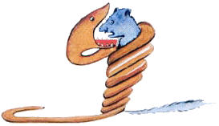
En la libro oni diris: "La boaoj glutas sia rabaĵo unuglute, senmaĉe. Sekve ili ne plu povas moviĝi kaj dormas dum sia sesmonata digestado."
Ekde tiam mi multe meditis pri la aventuroj en ĝangalo kaj per kolorkrajono mi sukcesis miavice fari mia unua desegno. Mia desegno numero Unu. Jen kiel ĝi estis:
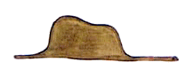
Mi montris mia ĉefverko al granduloj kaj demandis ili,
ĉu mia desegno timigis ili.
Ili al mi respondis: "Kial ĉapelo timigus?"
Mia desegno ne prezentis ĉapelo. Ĝi prezentis boao, kiu digestadas elefanto. Do, mi desegnis la enhavo de la boao, por komprenigi granduloj. Ili ĉiam bezonas klarigoj. Jen kiel aspektis mia desegno numero Du:
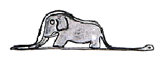
La granduloj konsilis, ke mi flankenlasu desegnoj de boaoj aŭ malfermitaj aŭ ne, kaj prefere interesiĝu pri geografio, historio, kalkularto kaj gramatiko. Kaj tiel, en mia sesjara aĝo, mi rezignis grandioza pentrista kariero. Mi senkuraĝiĝis pro la fiasko de mia desegno numero Unu kaj de mia desegno numero Du. Neniam la granduloj komprenas tute per si mem kaj al la infanoj estas lacige ĉiam kaj ĉiam donadi al ili klarigoj.
Mi do devis elekti alia metio kaj lernis piloti aviadiloj. Mi flugis iom ĉie tra la mondo. Kaj mi tute konsentas, ke geografio multe utilis al mi. Mi scipovis unuavide distingi Ĉinio de Arizono. Tio estas tre taŭga, se oni vojeraris nokte.
Tiel, dum la daŭro de mia vivo, mi havis amasoj da kontaktoj kun amaso da seriozaj homoj. Mi multe vivis ĉe granduloj. De tre proksime mi vidadis ili. Kaj tio malmulte plifavorigis mia opinio pri ili.
Kiam mi renkontis inter ili iu, kiu ŝajnis al mi iom klarvida,
iam mi provis per mia desegno numero Unu, kiu mi ĉiam konservis.
Mi volis scii ĉu tiu ĉi vere estas komprenema. Sed ĉiam oni respondis al mi:
"Ĝi estas ĉapelo."
Tiam al tiu mi parolis nek pri boaoj, nek pri praarbaroj, nek pri steloj. Mi adaptiĝis al ties konprenpovo. Mi priparolis briĝo, golfludo, politiko kaj kravatoj. Kaj la grandulo estis ja kontenta koni homo tiel konvena.
II
Do, mi vivis sola, sen iu ajn, kun kiu mi povus vere interparoli, ĝis paneo de mia motoro sur dezerto Saharo, kio okazis antaŭ ses jaroj. Io en la motoro rompiĝis. Kaj, ĉar estis kun mi nek mekanikisto nek pasaĝeroj, mi pretigis mi por provi tute sola sukcesigi malfacila riparo. Temis por mi pri vivdemando. Mi havis trinkebla akvo apenaŭ por semajno.
La unua vespero mi do endormiĝis sur la sablo, mil mejloj for de kiu ajn loĝigita loko.
Mi ja estis multe pli izolita ol ŝip-rompulo sur floso meze de oceano.
Sekve vi imagu mia surprizo, kiam tagiĝe vekis mi kurioza voĉeto:
"Mi petas vi... desegnu por mi ŝafineto!"
"Kio?"
"Desegnu por mi ŝafineto!"
Mi salte ekstaris kiel trafita de fulmo. Mi insiste frotis miaj okuloj. Mi bone rigardis. Kaj mi vidis tute eksterordinara hometo, kiu gravmiene rigardadis mi. Jen la plej bona portreto de hi, kiu mi poste sukcesis fari.
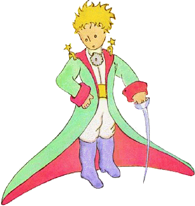
Sed kompreneble mia desegno estas ja multe malpli rava ol la modelo. Sed mi ne kulpas: la granduloj senkuraĝigis mi de pentrista kariero jam kiam mi estis sesjara, kaj, krom fermitaj kaj malfermitaj boaoj, mi lernis desegni nenio.
Do mi rigardis tiu aperaĵo per okuloj tute rondaj pro miro.
Ne forgesu, ke mi troviĝis mil mejloj for de iu ajn loĝigita loko.
Nu, mia hometo ŝajnis al mi nek vojerarinta, nek mortanta pro laceco,
malsato, soifo, aŭ timo. Hi neniel havis aspekto de infano perdita
meze de dezerto, mil mejloj for de iu ajn loĝigita loko.
Kiam mi fine sukcesis paroli, mi diris al hi:
"Sed... kio vi faras ĉi tie?"
Kaj tiam hi ripetis, tute milde, kiel afero tre grava:
"Mi petas... desegnu por mi ŝafineto!"
Kiam mistero tro impresas, oni ne kuraĝas malobei.
Eĉ se tio ŝajnas al mi absurda ĉi tie, mil mejloj for
de iu ajn loĝigita loko kaj en danĝero de morto,
mi tamen elpoŝigis paperfolio kaj fontoplumo.
Sed mi tiam ekmemoris ke mi lernis precipe geografio,
historio, kalkularto kaj gramatiko; kaj (kun iom da malbona humoro)
mi diris al la hometo, ke mi ne scias desegni. Hi respondis al mi:
"Ne gravas. Desegnu por mi ŝafineto!"
Ĉar mi neniam desegnis ŝafo, mi refaris por hi unu el la du solaj desegnoj. Kiuj mi kapablis fari: tiu de la fermita boao.
Kaj en mirego mi aŭdis la hometo respondi al mi:
"Ne! Ne! Mi ne volas elefanto en boao.
Boao estas tre danĝera kaj elefanto okupas tro multe da spaco.
Ĉe mi ĉio estas tute eta. Mi bezonas ŝafineto. Desegnu por mi ŝafineto!"
Do, mi desegnis.
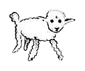
Hi atente rigardis kaj poste diris:
"Ne! Tiu ĉi estas jam tre malsana. Faru alia!"
Tiam mi desegnis devove:
Mia amiko ĉarme ridetis kun indulgo:
Vidu mem... ĉi tio ne estas ina ŝafeto", sed iĉa ŝafeto. Ĝi havas kornoj...
Do mi rekomencis desegni. Sed, kiel la antaŭaj, ĝi estis rifuzita:
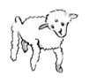
"Tiu ĉi estas tro maljuna. Mi volas ŝafeto, kiu longe vivu." Tiam mi senpacienciĝis kaj, ĉar mi volis senprokraste komnci la malmuntado de mia motoro, mi skizaĉis ĉi tiu lasta desegno.
Kaj mi ĵetis tiuj ĉi vortoj:
"Jen estas la kesto. La ŝafeto, kiu vi volas, troviĝas interne."
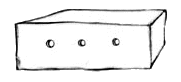
Sed mi tre suspriziĝis, vidante la vizaĝo de mia juna kritikisto ekbrili pro ĝojo:
"Ĝuste tia mi volis ĝi! Ĉu vi kredas, ke tiu ŝafeto bezonos multe da herbo?"
"Kial?"
"Tial, ĉar ĉe mi ĉio estas tute eta..."
"Certe sufiĉos. Mi donis al vi tute eta ŝafeto."
Hi klinis sia kapeto al la desegno:
"Ne tiel eta... Ha! Ĝi endormiĝis..."
Kaj tiel mi konatiĝis kun la eta princiĉo.
III
Longa tempo estis al mi necesa, por kompreni, de kie hi devenas. La eta princiĉo, kiu metis al mi multaj demandoj, neniam ŝajnis aŭdi la miaj. Estas ja vortoj hazarde diritaj, kiuj iom post iom malkovris al mi ĉio.
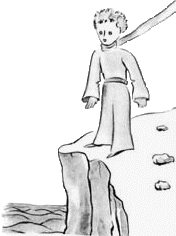
Tiel, kiam la unua fojo hi ekvidis mia aviadilo
(mi ne desegnos mia aviadilo, ĉar temas pri desegnaĵo tre malfacila por mi),
hi demandis al mi:
"Kio estas tiu ĉi aĵo?"
"Tio ne estas aĵo. Tio flugas. Tio estas aviadilo. Tio estas mia flugmaŝino."
Kaj mi fieris sciigi hi, ke mi flugas. Tial hi ekkriis:
"Kio? Do vi falis el la ĉielo?"
"Jes," mi diris modeste.
"Ha! Tio estas miriga!"
Kaj la eta princiĉo tre gracie ekridis.
Mi ekkoleris, ĉar mi deziris, ke oni serioze taksu miaj malfacilaĵoj.
Poste hi aldonis:
"Tiel do, vi ankaŭ venas de la ĉielo! De kiu planedo vi estas?"
Tuj mi ekvidis flagreto de klarigo pri la mistero de hia ĉeesto, kaj mi demandis:
"Do, vi venas el alia planedo, ĉu ne?"
Sed hi ne respondis al mi. Hi trankvile kapskuetis, rigardante mia aviadilo:
"Estas vere, ke per ĉi tio oni ne povas veni de tre malproksime..."
Kaj hi enprofundiĝis en revado, kiu longe daŭris. Poste hi elpoŝigis mia ŝafeto kaj absorbiĝis al en admirado de sia trezoreto.
Vi imagu kiom multe scivoligis mi tiu aludo pri "aliaj planedoj". Mi do penis por pliinformiĝi pri tio:
"De kie vi venas, etulo mia? Kie estas tiu via "ĉe mi"? Al kie vi volas forporti mia ŝafeto?"
Post pormedita silento hi respondis:
"La kesto, kiu vi donis al mi, ege taŭgas, ĉar dumnokte ĝi fariĝos ĝia dometo."
"Kompreneble. Kaj, se vi estos afabla, mi donos al vi ankaŭ ŝnuro por alligi ĝi dumnokte. Kaj fosteto."
Tiu propono ŝajne ŝokis la eta princo:
"Alligi ĝi? Kia stranga ideo!"
"Sed, se vi ne alligos ĝi, ĝi iros al ĉie ajn kaj perdiĝos..."
Kaj mia amiketo denove ekridis.
"Sed al kie do vi kredas, ke ĝi iros?"
"Al ie ajn. Rekte al antaŭe..."
Tiam la eta princiĉo gravmiene rimarkis:
"Ne gravas. Ĉe mi estas tiel malvaste!"
Kaj, eble iom melankolie, hi aldonis:
"Rekte al antaŭe, oni ne povas iri al tre malproksime..."
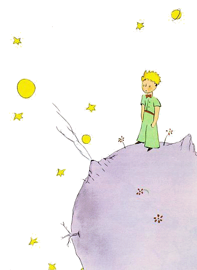
IV
Tiel mi sciiĝis pri dua tre grava afero: la planedo, de kie hi venis, estas apenaŭ pli granda ol domo!
Tio ne povis multe mirigi mi. Mi ja sciis, ke krom grandaj planedoj kiel Tero, Jupitero, Marso kaj Venuso, kiuj ricevis efektivaj nomoj, kelkaj estas tiel malgrandaj, ke oni tre malfacile povas vidi ili per lorno. Kiam astronomo altrovas unu el ili, li atribuas al ĝi certa numero kiel nomo. Ekzemple li nomas ĝi: "Asteroido 3251".
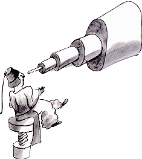
Mi havas seriozaj motivoj por kredi, ke la planedo, de kie la eta princiĉo venis, estas la asteroido B-612.
Tiu asteroido estis vidita per lorno nur unufoje, en 1909, de turka astronomo.
Hi tiam faris granda demonstracio pri sia eltrovo ĉe iu internacia astronomia kongreso. Sed pro hia kostumo neniu kredis hi.
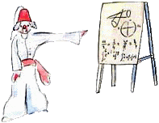
Tiaj estas la granduloj.
Feliĉe por la reputacio de la asteroido B-612, iu turka diktatoriĉo devigis sia popolo sub mortpuno vesti si eŭropane. En tre eleganta vesto la astronomo refaris sia demonstracio en 1920. Kaj ĉifoje ĉiuj samopiniis kun hi.
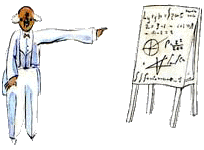
Se mi rakontis al vi tiuj detaloj pri la asteroido B-612 kaj konfidis ĝia numero, estas nur pro la granduloj. La granduloj frandas ciferoj. Kiam vi parolas al ili pri nova amiko, ili neniam demandas vi pri ĉefaj aferoj. Neniam ili diras al vi: "Kia estas lia voĉo? Kiuj estas liaj ŝatataj ludoj? Ĉu li kolektas papilioj?" Anstataŭe: "Kiom da fratoj li havas? Kiom li pezas? Kiom liaj patroj gajnas?" Nur tiam ili kredas, ke ili konas li. Se vi diras al grandulo: "Mi vidis bela domo el ruĝetaj brikoj kun geranioj ĉe la fenestroj kaj kolomboj sur la tegmento...", ili ne sukcesas imagi al si tiu domo. Oni devas diri al ili: "Mi vidis domo por miliono da eŭroj." Tiam ili ekkrias: "Kiel bela ĝi estas!"
Nu, se vi diros al ili: "Pruvo ke la eta princiĉo ekzistis, estas, ke hi estis rava kaj ridis kaj deziris ŝafineto. Se iu deziras ŝafineto, tio pruvas, ke iu ekzistas", ili moke levos siaj ŝultroj kaj nomos vi infano! Sed se vi diros al ili: "La planedo, de kie hi venis, estas la asteroido B-612", ili tiam estos konvinkitaj, kaj ne plu ĝenos vi per siaj demandoj. Tiaj ili estas. Ni ne malpardonu tio al ili. La infanoj devas esti tre indulgemaj al la granduloj.
Sed - kompreneble - ni, kiuj komprenas la vivo,
ja fajfas pri numeroj! Mi bedaŭras, ke mi ne komencis
tiu ĉi rakonto kvazaŭ fabelo. Plaĉus al mi diri:
"Foje estis eta princo, kiu loĝis sur planedo apenaŭ pli granda ol hi,
kaj tiu pinco bezonis amiko." Por tiuj, kiuj komprenas la vivo,
tio ĉi ŝajnus multe pli vera.
Fakte mi ne ŝatas, se oni legas mia libro supraĵe. Dolorigas mi rakonti ĉi tiuj memoraĵoj. Jam antaŭ ses jaroj mia amiketo foriris kun sia ŝafeto. Se nun mi povas priskribi hi, mi faras tio por ne forgesi hi. Estas malgaje forgesi amiko. Ne ĉiu homo havas amiko. Kaj mi povus fariĝi tia, kiel la granduloj, kiuj ne interesiĝas plu pri io krom ciferoj. Do ankaŭ pro tio mi aĉetis skatolo da farboj kaj aro da krajonoj. Ĉar mi neniam provis desegni io alia krom fermita kaj malfermita boaoj, kiam mi estis sesjara, estas malfacile - en mia nuna aĝo - rekomenci desegni. Mi kompreneble povas fari la portetroj kiel eble plej fidelaj. Sed mi ne estas tute certa, ĉu mi sukcesos. Unu desegno taŭgas, kaj alia ne similas plu. Mi ankaŭ eraras iom pri la staturo. Tie la eta princiĉo estas tro granda. Aliloke hi estas tro malgranda. Mi ankaŭ hezitas pri la koloro de hia vesteto. Mi do desegnas kun necerteco, tiel kaj tiel ĉi, pli-malpli bone. Eble mi eraros pri iuj pli gravaj detaloj, sed tio vi pardonu al mi. Mia amiketo neniam donis klarigoj. Eble hi kredis mi sama kiel si. Sed mi - bedaŭrinde - ne kapablas vidi ŝafoj tra kesto. Eble mi estas iom kiel la granduloj. Verŝajne mi maljuniĝis.
V
Ĉiutage mi eksciis ion pri la planedo, hia foriro kaj hia vojaĝo. Tio okazis tute trankvile per hazardaj rimarkoj. Tiel la tria tago mi ekkonis la dramo de la baobaboj.
Ankaû ĉi foje tio okazis dank' al la ŝafeto, ĉar subite kvazaû kaptita
per grava dubo la eta princiĉo demandis mi:
"Ĉu vere ŝafoj manĝas arbustoj?"
"Jes. Estas vere."
"Ha! Mi estas kontenta."
Mi ne komprenis, kial tiel multe gravas, ke ŝafoj manĝu arbustoj.
Sed la eta princiĉo aldonis:
"Sekve, ankaû baobaboj ili manĝas, ĉu ne?"
Mi atentigis la eta princiĉo, ke baobaboj ne estas arbustoj, sed arboj grandaj kiel preĝejoj, kaj eĉ se hi kunportus tuta aro da elefantoj, ili ope ne manĝus unu sola baobabo.
La ideo pri elefantoj ridigis la eta princiĉo:
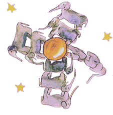
"Estus necese meti ili unuj sur la aliaj…" Sed hi saĝe rimarkis: "Antaû ol fariĝi grandaj, la baobaboj unue estas malgrandaj…" "Ĝuste! Sed kial do viaj ŝafoj manĝu la malgrandaj baobaboj?" Hi respondis al mi: "Nu! Memkompreneble!", kvazaû temus pri io tute evidenta. Kaj mi devis multe cerbumi por solule kompreni tiu problemo.
Kaj efektive, same kiel sur ĉiuj planedoj, bonaj kaj malbonaj herboj kreskis sur la planedo de la eta princiĉo. Do: el bonaj semoj herboj kaj el malbonaj semoj malbonaj herboj. Sed la semoj estas nevideblaj. Ili dormas sekrete en la grundo, ĝis unu el ili ekhavas la kaprico vekiĝi. Ĝi tiam eltiriĝas kaj unue timeme direktas rava sendanĝera ŝoso al la suno. Se ĝi estas ŝoso de rafano aû roz-arbeto, oni povas lasi ĝi kreski, kiel ĝi volas. Sed se temas pri malbona planto, oni devas elradikigi ĝi tuj kiam oni rekonis ĝi.
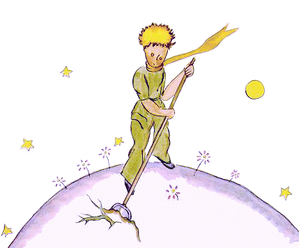
Nu, sur la planedo de la eta princiĉo estis teruraj semoj… baobaboj. La grundo de la planedo estis danĝere plena de ili. Se oni tro malfrue zorgas pri baobaboj, oni neniam plu povas forigi ĝi. Ĝi invadas la tuta planedo. Ĝi traboras ĝi per siaj radikoj. Kaj, se la planedo estas tro malgranda kaj la baobaboj tro multaj, ili krevigas ĝi…
"Tio estas demando pri disciplino", la eta princiĉo diris al mi pli poste. "Kiam oni finis sia matena tualetado, oni devas zorge fari tiu de la planedo. Oni devas devigi si regule eltiradi la baobaboj, tuj kiam oni distingis ili de roz-arbetoj, al kiuj ili multe similas, kiam ili estas tre junaj. Tio estas tre teda, tamen tre facila laboro."
Kaj iu tago hi konsilis, ke mi penu fari bela desegnaĵon pri tio, por efektive enkapigi tio al la infanoj de mia planedo. ”Se ili iam vojaĝos,” hi diris al mi, "tio eble utilos al ili. Iufoje oni povas prokrasti sia laboro kaj ne gravas. Sed, se temas pri baobaboj, ĉiam okazos katastrofo. Mi konis planedo, sur kiu loĝis mallaboremulo. Hi malatentis tri arbustoj…"
Laû indikoj de la eta princiĉo mi desegnis tiu planedo. Mi ne multe ŝatas paroli kun moralista tono. Sed la danĝero de la baobaboj estas tiom malmulte konata, kaj la riskoj por tiu, kiu vojeraras sur asteroido, tiel multe konsiderindaj, ke ĉi-foje mi escepte forlasas mia rezerviĝemo. Mi diras: ”Infanoj! Atentu la baobaboj!"
Por averti miaj amikoj pri tiu nekonata danĝero, kiu preskaû trafis ili kaj mi mem, mi tiom multe prizorgis tiu desegno. La leciono, kiu mi donis, multe valoris.
Eble vi demandos vi: "Kial en ĉi tiu libro ne estas aliaj desegnoj tiel grandiozaj, kiel la desegno de la baobaboj?".
La respondo ja estas simpla: mi provis, sed mi ne povis sukcesi. Kiam mi desegnis la baobaboj, mi estis pelata de urĝosento.
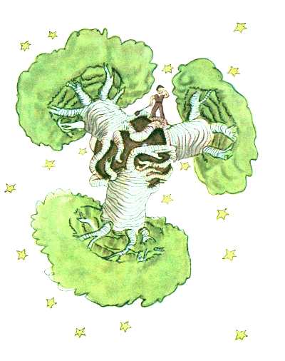